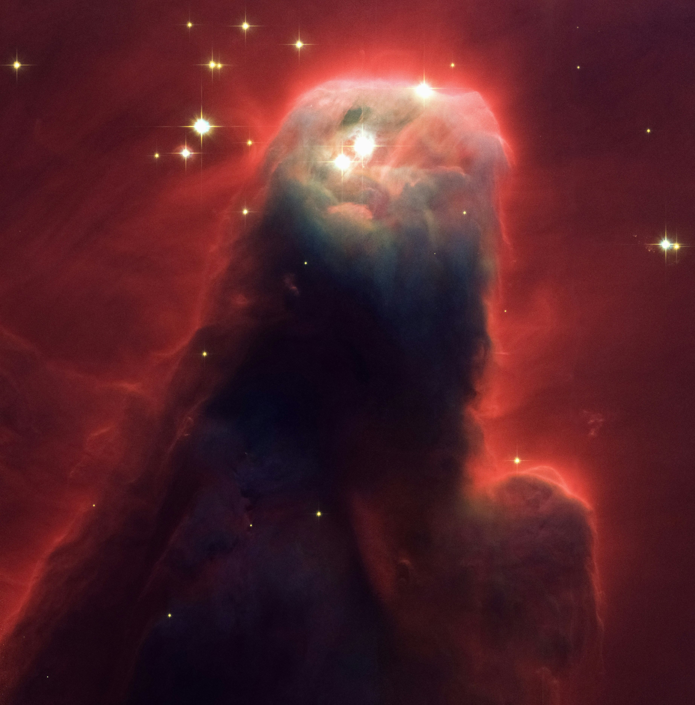

front-end dev
I possess a robust fundamental understanding of HTML structure, enabling me to create well-organized and semantic web pages. Additionally, my expertise in utilizing CSS ensures that I can style these pages effectively, transforming them from plain and dry to visually engaging and dynamic.
With 4-5 years of experience in JavaScript, I have honed my skills in building dynamic and reusable code. My focus is on writing efficient and functional code, ensuring that applications are both high-performing and maintainable. Through my experience, I've developed a keen eye for optimizing performance and adhering to best practices, allowing me to create robust and scalable web applications.
With 2-3 years of experience working with React, I have successfully built large-scale SaaS projects and online stores. My expertise lies in leveraging React's component-based architecture to create highly interactive and responsive user interfaces. Throughout these projects, I have demonstrated proficiency in managing state, optimizing performance, and integrating with various APIs and backend services, ensuring seamless and engaging user experiences.
Designer & developer based out of Cape Town
Currently based in Cape Town, South Africa, I originally hail from Johannesburg. I'm pursuing a dedicated path in software development at CodeSpace, where I'm continuously expanding my knowledge and skills. This education is equipping me with the latest industry techniques and best practices, preparing me to contribute effectively to the tech community.
My coding journey began like that of many others my age, with a curiosity to modify the games I played. This initial spark ignited a passion for software development, and the more I learned, the deeper my love for coding grew. Each new discovery and challenge fueled my enthusiasm, transforming a simple hobby into a profound dedication to mastering the art of software development.

A selection of my range of work